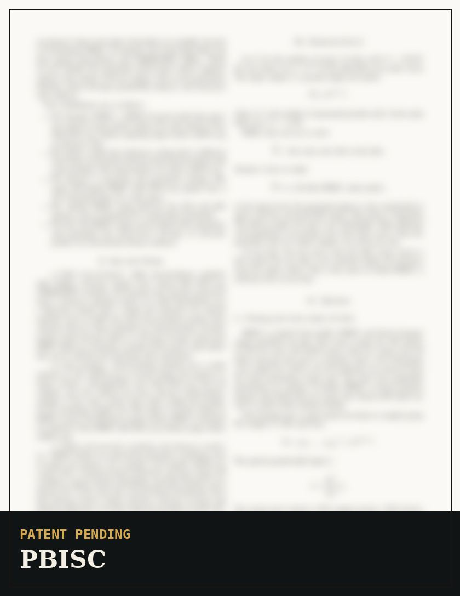

Filing in progress
PBISC: bulk RNA-seq to immune pseudo-cells
A PBMC-focused generative deconvolution model that turns bulk RNA-seq into an analysis-ready pseudo-single-cell count matrix for immune-state interpretation.